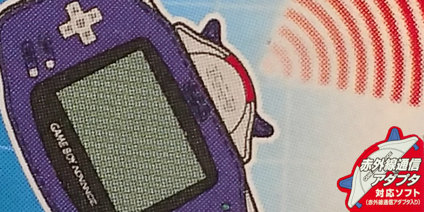
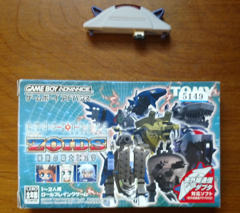
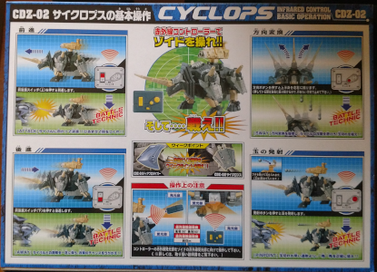
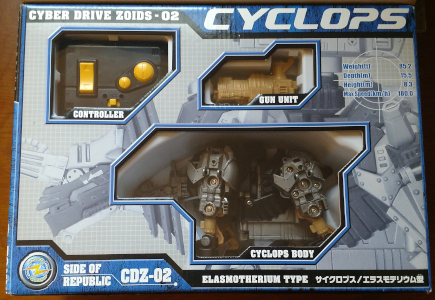
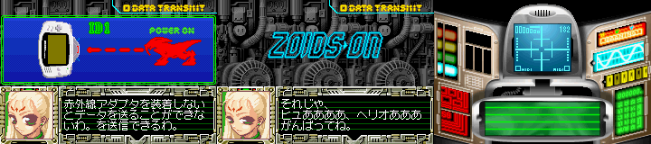
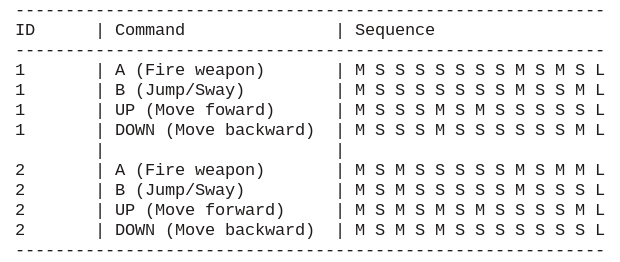
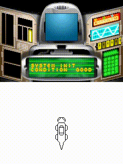

Relentless
My personal theme for 2020 is to be "relentless". Every year I investigate about 4 previously unemulated add-ons, peripherals, and other such hardware. Between trying to reverse-engineer things and work on other aspects of an emulator (like fixing an endless stream of NDS-related bugs) and dealing with real-life, it seems pretty reasonable to set aside roughly 3 months for every Edge of Emulation article. But recently, I've felt that's too slow. The list of DMG/GBC/GBA specific items left to tackle is at about 6, down from 18 when I first started years ago. However, I also keep a list of all the unemulated stuff for other systems. Once the Game Boy-era odds and ends are taken care of, I'm not simply going to hang up my hat and call it a day. There's just too much we still know next to nothing about.
With that in mind, it's time to be "relentless" and speed up my efforts, which today brings me to yet another GBA accessory. In July 2003, Tomy Corporation released Cyber Drive Zoids: Kiju no Senshi Hyuu. As part of the Zoids franchise, the game involves many battles between giant animal-inspired mecha. This title is most notable for being the only commercial GBA software compatible with the AGB-006, Nintendo's official infrared adapter for the handheld system. Unlike its predecessor, the GBA does not have native IR connectivity, but the AGB-006 restored this lost functionality. The purpose of the AGB-006 in Cyber Drive Zoids is to communicate with special Zoid toy models, which the game can control by sending the appropiate signals. Each copy of Cyber Drive Zoids came bundled with an AGB-006, but the toys themselves were a separate purchase.
Last year I dealt with a number of "toys-to-life" video games that used plastic figurines or other items such as Battle Chips. Cyber Drive Zoids probably has them all beat, however, since it basically allows players to command a miniature robot. Although perhaps only the most ardent Zoids fans would buy both the game and the model, it's an example of how far developers were willing to push the Game Boy's utility. Up until Cyber Drive Zoids was released, the Game Boy had been used for taking and printing photos, barcode reading, online interactions, sonar, and sewing. With the arrival of the AGB-006, Tomy Corporation broke yet another boundary. For this reason, the infrared adapter, the software, and the model deserve to be researched and ultimately preserved in some form.
Driven
As I mentioned earlier, there are three components at play here: the game, the AGB-006, and the special Cyber Drive Zoids model. The AGB-006 comes with the game, so it's not too hard to find both with any boxed copy. The AGB-006 is relatively small as an acessory. It's roughly the same size and shape as the DOL-011 (GBA-to-GCN cable) without the cord on top. What's perhaps the most fascinating aspect of the AGB-006 is that it's an official Nintendo product rather than something made by a third-party. It's a very curious situation because the AGB-006 did not see any use outside of Cyber Drive Zoids. In all appearances, the device was crafted for one game, for one very narrow usage (which was a bonus feature, not part of the core gameplay). Generally this sort of hardware is made by other companies; good examples would be the barcode scanner for Barcode Taisen Bardigun or the Full Changer for Zok Zok Heroes. It may indicate that Nintendo had larger plans for infrared communication on the GBA but never pursued them.
There are three compatible Zoids models, part of the "CDZ" line: CDZ-01 Diablotiger, CDZ-02 Cyclops, and CDZ-EX Diablotiger Beta. Each comes pre-built, requiring no assembly besides attaching some additional armor that's supposed to fall off in combat. They come packaged with their own infrared controllers, so the GBA game and hardware are not necessary to play with them. Even so, the game gives a lot of exclusive advantages. Players can use the stats from their in-game Zoid to "level up" the CDZ model, gaining faster speed, better HP, and the ability to temporarily become invincible through a boost mode. The Zoids have a cannon mounted on their backs that can fire several projectiles. The goal was to get together with a friend and battle two CDZ units against one another. If a certain area of the Zoid is attacked, it takes damage. If one Zoid receives enough damage, it loses the match. The toys kept track of their own HP and flashed different patterns of light from their eyes to visibly display their status. These CDZ models are not uncommon, but they aren't especially cheap either. Prices generally start around $50 USD and go upward depending on the condition and shipping.
  
The toy models of Zoids have a long history with motorized parts. The CDZ variants took things to a new level of immersion by being GBA compatible.
Even after I had gathered all of the necessary pieces last year, I prioritized other projects. When 2020 came, however, I immediately started examining how everything worked. The first objective was to see exactly how the GBA controlled the AGB-006. To accomplish this, GBE+ ran Cyber Drive Zoids and logged all activity related to serial input/output. The game uses the so-called General Purpose mode, not unlike the Soul Doll Adapter from Legendz and the Multi Plust On System from Bouken Yuuki Pluster World. This meant that the software manually controls the SI, SO, SC, and SD pins and can more or less completely dictate how data is transferred. Normally these situations become problematic because the underlying data protocol could look like anything, however, I did not expect anything terribly complicated from an IR adapter.
As soon as I entered the menu for Cyber Drive Zoids to establish a connection with the CDZ model, GBE+ timed out and crashed. The timing out was no surprise, as the AGB-006 was at that point totally unemulated. The crash, however, was rather concerning. I theorized that it was an issue with how the game processes sound. The vast majority of GBA titles do not explicitly rely on the BIOS to run the sound engine, yet Cyber Drive Zoids proved an exception. The GBA BIOS provides a lot of common functions, such as software-based division and square-roots, various decompression methods, memory transfers, and a few pausing modes (halt, sleep, wait for interrupts). The BIOS also offers numerous sound-related functions. Most other titles won't ever touch them, but Cyber Drive Zoids absolutely requires them. GBE+ uses high-level emulation to perform equivalent operations, so when a game calls on the BIOS it gets the results it wants, and the emulator needs no special files. Unfortunately, this scheme only works if GBE+ has a replacement function for whatever a game requests. Almost none of the advanced sound-related BIOS functions were supported in GBE+, since they're pretty complex and not well documented. If GBE+ just ignored them, the game managed to boot and run quite well with no sound, up to a point anyway.

These warning logs can't possibly be important /s
The easiest solution is to have GBE+ run the original BIOS code for these functions, just like real hardware would, i.e. low-level emulation. Interestingly enough, this feature was not present in GBE+ at all. GBE+ could load the BIOS and play the intro animation, but once the startup code finished, it would use high-level emulation for all BIOS calls. This is mostly laziness, but a design decision I will defend (kinda). All the way back in October 2014, when GBE+ was just a baby, I was trying to get commercial games running, specifically Super Dodgeball Advance. I was almost there after eliminating about a dozen CPU bugs when the game called its first software interrupt (SWI) which in turns jumped to the BIOS functions. At the time, GBE+'s GBA core was very early and experimental. Adding the ability to load the BIOS and run the BIOS was a lot more effort than quickly throwing together a high-level function. Super Dodgeball Advance just wanted some memory copy operations and a halt-until-vblank function, simple stuff. So GBE+ went with high-level emulation of the BIOS from the start. Whenever a game needed something new from the BIOS, I'd add an HLE'd version of it. I also didn't want GBE+ to depend on having access to the BIOS file, which I always found to be annoying and bothersome. So for years, GBE+ never actually ran the real BIOS functions. With Cyber Drive Zoids though, there finally was no choice.
Once GBE+ could load and execute code from the BIOS, audio started playing from the game, and the crash no longer occurred. With those issues out of the way, I continued probing the AGB-006. The GBA made a handful of writes to the AGB-006 but nothing after that. Cyber Drive Zoids began waiting for something until it timed out. On real hardware the AGB-006 never timed out, and the software acknowledged the accessory without delay. I suspected that the game might try to detect the presence of the AGB-006 by sending out an IR pulse, therefore it should cause a brief observable infrared flash. Almost 2 years ago, as part of my investigation of the Game Boy Color's IR port, I made some homebrew that could record IR signals, a perfect tool for this situation. Using the GBC while the GBA played Cyber Drive Zoids, the homebrew indeed picked up IR light from AGB-006. The result offered one more clue, but not enough to solve the mystery.
What exactly the game wanted to happen after the IR light turned on was hard to figure out. To better understand that, I picked apart the game's code by disassembling any relevant sections. Slowly, by piecing together what the game did whenever it wrote to or read from the AGB-006, a clearer picture emerged. Initially I believed that the values of the SI, SO, SC, and SD pins were supposed to change in a certain way, just like it did for other devices on the GBA that use General Purpose mode. Despite using GBA test ROMs of my own to poke the AGB-006, none of the values returned made a difference when trying to emulate it. Going even further, various ROM hacks tested the values of the pins while the game was running. Even with all of that, the values were the same ones from before. This was very puzzling, as the game didn't seem to care about the pins at all, and the AGB-006 didn't seem to affect them either. But how could that be?
Diving further into Cyber Drive Zoids' code, I mapped out points where the game checked different conditions and made branches. My idea was to make a ROM hack that would freeze the game if a certain codepath executed, a sort of "trap" or breakpoint. By adding traps one by one and seeing which caused the hack to freeze when running on real hardware, I could definitively see what code never ran and what code always ran. I was very surprised to see that nearly all the branches I had singled out never triggered a freeze, except for the last one. The final trap only happened when a serial interrupt was generated. I instantly knew how the game sensed whether an AGB-006 was connected. First, Cyber Drive Zoids would send an IR pulse, which should then trigger a serial interrupt. No interrupt, no AGB-006. Quickly, I made a homebrew GBA ROM that recreated the same writes to the AGB-006. When the homebrew checked for a serial interrupt, there it was! Emulating just the serial interrupt is enough to fool Cyber Drive Zoids to move onto the next screen and start sending more IR pulses for the CDZ models. It only performs one check like this, afterwards it will blindly try to send IR pulses even with no AGB-006 connected.

After receiving a serial interrupt, the game believes an AGB-006 is attached and allows the software to enter an IR remote control mode.
We get signal
When Cyber Drive Zoids started sending IR pulses, only two values were written to the R_CNT register: 0x80BE and 0x80B6. One must have been used to turn on the IR light, and the other used to turn the IR light off. Creating a simple test ROM proved which one was which. Apparently the light activates when setting the SO pin high and deactivates when setting the SO pin low. Knowing this solved only half of the equation, however. The AGB-006 should have been able to receive signals as well. There are two diodes inside, meaning it should technically be a transceiver. Interestingly enough, Cyber Drive Zoids never receives any signals. When communicating with CDZ models, it only ever sends commands via IR. The only piece of software written to use the AGB-006 features one-way transmission.
The game wasn't going to give any hints, so how exactly does one discover the secrets of this forgotten functionality? It's a lot less glamorous that some might imagine: an educated guess. I started messing around with different values for the pins, and one of them suddenly let some homebrew of mine catch IR signals coming from a TV remote. The key was to also wait for another serial interrupt. Evidently, both sending and receiving IR signals causes the AGB-006 to generate these interrupts. It's a bit odd that you'd want an interrupt when sending your own signal, but that's just how it was made. At any rate, I assumed the SI pin ought to be set as input, and that indeed seems to force the AGB-006 to fire interrupts whenever a signal comes. Although Cyber Drive Zoids never uses the AGB-006 in this manner, it was very exciting to do something no commercial software had ever achieved.
To further my comprehension of the AGB-006, I took some comparisons between the device and the IR port on the GBC. It has a considerably wider reception range. While the GBC is very much line-of-sight and limited to a few dozen centimeters, the AGB-006 can receive signals from almost 2 meters at all kinds of angles. IR sources of light basically have to be horizontally perpendicular, right below, or behind the AGB-006 to avoid detection. Additionally, the AGB-006 does not provide any measurable feedback when IR light stops being detected. It only triggers an interrupt when transitioning from a "no light detected" state to a "light detected" state. That is to say, after sensing IR light, it won't say when it stops sensing it, only when it starts sensing it yet again. In practice, this works out pretty well, since software would only deal with the total ON-OFF delay, looking at the IR pulse duration as a whole.
Having studied how the AGB-006 handles IR signals on both ends, I turned my attention to the commands it sent to the CDZ models. The first IR pulses it fired were part of a sync signal when the session begins. Afterwards, depending on which buttons the player presses, the game issues commands for moving forward/backward, shooting the cannon, and pivoting. The game keeps blasting IR signals until the button is released, so there was a lot of data to log. I began by taking note of the total amount of CPU cycles that passed each time the game turned the IR light on. The IR light is only turned on for a very short time, but it's kept off for long periods of differing lengths. A pattern soon emerged and allowed me to break each pulse into groups.
Mini Pulses were quick (about 18.1us to 20us), numerous, and thrown in between every other type of pulse, possibly acting in a sort of keep-alive role for the CDZ model. After that, there were three other types of pulses. Short Pulses were about 16x the length of a Mini Pulse, Medium Pulses about 40x that length, and Long Pulses about 6000x that length. To understand the format of the commands, the Mini Pulses aren't necessary to consider, but the latter three types are fundamental. Each command is made up of 12 Short or Medium Pulses with a single Long Pulse marking the end. Depending on which pulses are Short or Medium, the CDZ model performs a specific action. Furthermore, every command has two forms for each of the IR "channels". The CDZ models are supposed to battle one-on-one, so in order to avoid one player from sending a command to the other Zoid, only one version is sent based on the selected channel.

A look at some basic commands in terms of Short and Medium Pulses.
Since the commands are entirely made up of Short and Medium Pulses, they translate well into binary. If a Short Pulse represents a "0" and a Medium Pulse represent a "1", the commands then become 12-bit numbers. Curiously enough, each 12-bit command appears to have three separate 4-bit segments, each with their own purpose in determining what action the Zoid will take. It's not entirely clean and organized, but the segments roughly correspond to the following classes. The first, the Action Category decides if it's a primary battle move (turning, shooting, moving), or an auxillary move (war cries, retreating, syncing). The second, the Motion Type causes the Zoid to go forward, backward, or stay put. The final one, the Action Type details what move exactly it should perform. The whole thing looks pretty messy, having a bunch of duplicates and a number of commands that are in fact conditional.
Still, an emulator can keep track of incoming Short/Medium Pulses, calculate the 12-bit value, and check each section to see what command was issued. Adding this ability in GBE+ allowed the commands to be analyzed in real-time (even though the game already displays the commands on-screen as well). More importantly, knowing these commands let GBE+ go much further than that.
Let's get physical
While emulating the AGB-006 preserves a small bit of gaming history, it doesn't honestly add much to the gameplay. In Cyber Drive Zoids, all it does is permit the player to get past a certain screen and look at another screen that mimics the cockpit of a Zoid until they exit. Beyond that, emulation of the AGB-006 offers very little. Without a CDZ model to control, the overall experience is pretty underwhelming and a bit... boring. The only solution, therefore, is to emulate a CDZ model in GBE+ to spice things up. Conceptually, this is an easy task. GBE+ only needs to draw a virtual CDZ model on screen and update it according to whatever IR commands the game sends. Since GBE+ already scans and identifies commands, the rest of the work is just rendering stuff.
With a bit of crude artwork, GBE+ can display a Zoid on a subscreen that responds to the IR commands. While the default sprites here lack a lot of details and the physics aren't perfect, the overall feel of controlling a CDZ model is maintained in some sense. The Zoid can move forward, backward, shift left and right to turn, and fire the cannon on its back. It's all a rough approximation at best, but it serves as a much better demonstration of the CDZ models than text alone. Although some videos of the CDZ models are available on YouTube, being able to actually control a simulated version adds a deeper appreciation of the toys. Despite the basic graphics, efforts such as these are often the only way emulation can provide access to physical objects not easily digitized. The presentation can evolve as time goes on for more vivid Zoids or even different types of Zoids, and it's completely capable of moving to 3D thanks to the open-ended code behind this feature. At a minimum, a more comprehensive 2D interpretation will definitely come in the future.
Here's how a real CDZ model handles itself in action.

Here's how the emulated CDZ model works. Though limited by approximation and low-quality graphics, it's actually much smoother to operate than the real thing.
Next steps
It's a shame that the AGB-006 was never utilized for more. It acts as a glorified remote control for a plastic robot, even though each model already came with their own IR controller. Aside from that, IR communication was non-existent on the GBA. After the GBC, IR died a sudden and almost instant death on Nintendo's handhelds, having only very limited use on the NDS, 3DS, and Switch. In its place, other wireless technologies like Wifi and NFC filled the void. Even the GBA's own Wireless Adapter (AGB-015) made the AGB-006 redundant as a means of getting two Game Boys to talk to one another. The height of video games interacting with gaming consoles or other objects via IR had passed when Cyber Drive Zoids came out. In some ways, the software and its ability to command real Zoids are the last remnants of old era.
All the same, it's important to remember this short and extremely brief chapter of the GBA. Though IR communication never went far during this time, it still gives us much to learn. Nintendo once planned for the GBA to have a native IR port like the GBC, on early prototypes at least. There's even some evidence that Cyber Drive Zoids may have originally been coded to use it. Somewhere along the line, however, that IR port was lost. We can only wonder what things would have been like if Nintendo hadn't changed their minds. The fact that the AGB-006 was produced at all suggests they hadn't entirely abandoned the concept. Even so, the adapter missed the handheld's launch date by 2 full years, and support for the device never spread. The circumstances surrounding the only GBA game to support IR communication is a fascinating case to say the least.
This year is just getting started as far as I'm concerned. There's far more work to be done for the Game Boy. Even when all of the Game Boy-related hardware is taken care of, my mission will not be complete. Over the years, I've come to realize that plenty of other consoles have unemulated devices as well. With everything only ever getting older, this is no time to slouch and slack off. While the Game Boy has been my domain for all of these Edge of Emulation articles, it's time to expand. As I write this, I've already investigated and emulated 2 NDS-specific items. I'll try to focus on one of them next time, along with something special for the Gamecube in the future. With any luck, 2020 will be packed with non-stop discovery and reclaim a fair bit of gaming history.